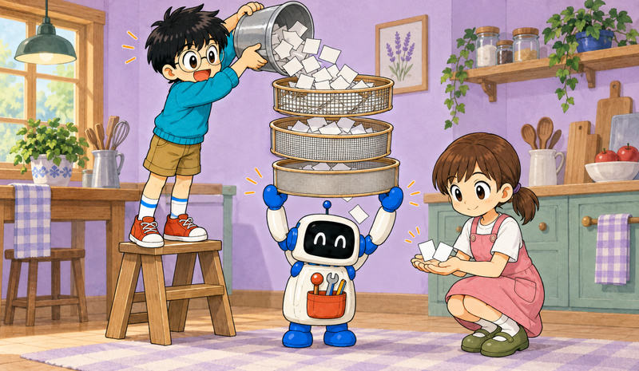
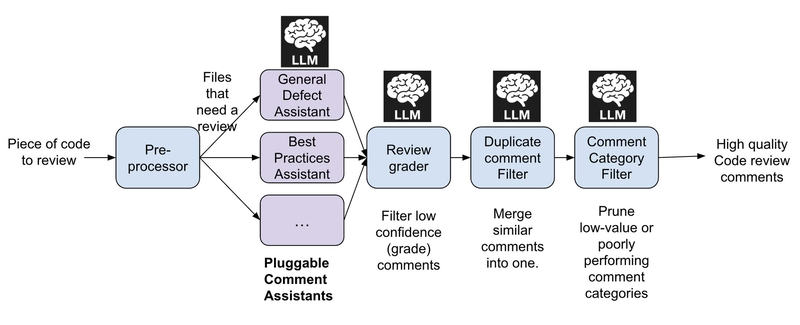

Feature 05 · ARTICLE · 2025 08
uReview: Scalable, Trustworthy GenAI for Code Review at Uber
Uber’s reviewers are overloaded by the growing volume of AI-assisted code. We built uReview, a second reviewer that is an AI, and its main enemy is the false positive. False positives come from two places: hallucinated comments, and valid comments that don’t matter in context. When engineers meet too many, they tune out. So we chain prompts: one step generates comments, and others grade, merge, and suppress them. uReview now analyzes over 90% of the ~65,000 diffs landed at Uber each week. Engineers who interact with it mark 75% of its comments useful, and over 65% of posted comments are addressed.

How it works

When a change is submitted, uReview drops low-signal files: configuration, generated code, experimental directories. For the rest, it builds a prompt with surrounding context: nearby functions, class definitions, imports.
Pluggable assistants each hunt one class of issue, with their own prompts and context. Three run today, and we’re actively expanding the list:
Standard: bugs, incorrect exception handling, logic flaws.
Best Practices: Uber conventions, drawn from a shared registry of style rules.
AppSec: application-level security vulnerabilities.
The comments then pass through filters:
A secondary prompt scores each comment’s confidence. Thresholds are set per assistant, per language, and per comment category.
A semantic similarity filter merges overlapping suggestions.
A classifier tags each comment’s category and suppresses categories with historically low developer value.
Surviving comments post inline. Developers rate them “Useful” or “Not Useful,” and every comment streams with its metadata to Apache Hive via Kafka.
How we measure
To learn whether a comment was addressed, we re-run uReview five times on the final commit. The LLM is stochastic: one rerun might skip a lingering issue or revive a fixed one. Five is the minimal count that virtually eliminates missed detections while keeping cost and latency low. A comment counts as addressed if no rerun reproduces a semantically similar one.
A curated benchmark of commits with known issues gives precision, recall, and F1 against human labels. It lets us iterate locally before deploying.
Results
uReview runs in all six monorepos (Go, Java, Android, iOS, TypeScript, Python). It reviews every commit in CI within a median of 4 minutes.
Usefulness stays above 75%.
On average, 65% of its comments are addressed in the same changeset. Internal audits show that only 51% of human-written comments are considered bugs by the author and addressed in the same changeset.
It processes over 10,000 commits a week, excluding configuration files. A second human reviewer looking for the same issues would need 10 minutes per commit. That comes to about 1,500 hours saved weekly, nearly 39 developer years annually.
The best configuration paired Claude-4-Sonnet generating comments with o4-mini-high grading them. It scored the highest F1 of every setup tested, including GPT-4.1, O3, O1, Llama-4, and DeepSeek R1. Claude-4-Sonnet with GPT-4.1 as grader came second, 4.5 points behind. We periodically re-evaluate newer models.
We build in-house for two main reasons. First, most third-party tools require GitHub, and we use Phabricator. Second, on our code those tools produced many false positives and low-value true positives, and they couldn’t reach internal systems.
Lessons
Precision over volume. Comment quality matters far more than quantity. Developers quickly lose confidence in a tool that produces low-quality suggestions. Fewer, more useful comments led to stronger engagement and wider adoption.
Guardrails matter as much as prompts. Even with o4-mini-high and Claude 4 Sonnet, single-shot prompting produced hallucinated issues, duplicates, and inconsistent quality. Prompt design helped, but system architecture and post-processing were even more critical.
Developers don’t like style comments. These scored poorly:
readability nits
minor logging tweaks
low-impact performance optimizations
These scored well, especially when paired with examples or links to internal docs:
correctness bugs
missing error handling
best-practice violations
Bugs, not system design. uReview sees only the code. It doesn’t see past PRs, feature flags, schemas, or docs, so it can’t assess overall correctness or review design. We foresee this may change as MCP servers are built to reach those resources.
Gradual rollout builds trust. We rolled out one team or assistant at a time, with every stage instrumented. We A/B-tested fixes and shipped them within a day.
Linters still have a job. For simple, syntactic patterns, linters are accurate, reliable, and cheap. LLMs fit what linters can’t check. The Uber Go style guide recommends the time library for time operations, for example, and following that rule requires knowing that a given integer variable represents time.
CI, not only the IDE. We have less control over what a developer does locally.
What’s next
We plan to add richer context, cover more categories such as performance and test coverage, and build reviewer-focused tools for understanding code and spotting risk. Engineers stay firmly in control.